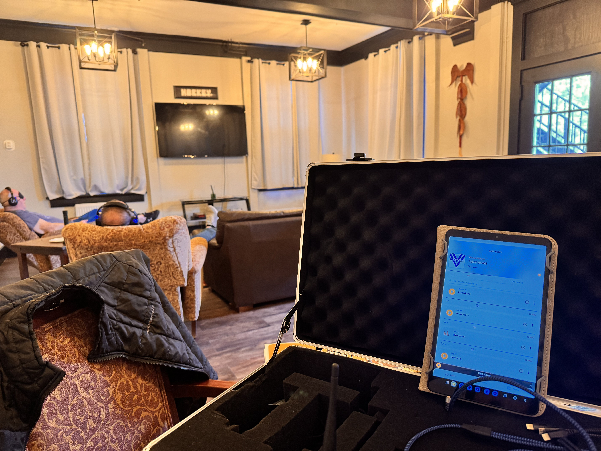

What We Offer at The Barnyard
At Guardian 4 Heroes, we believe in healing through connection, with horses, nature, movement, and sound. Our programs at The Barnyard offer a holistic approach to restoring balance in mind, body, and spirit.
Equine-Facilitated Psychotherapy & Learning (EFPT)

Struggling with mental health, new to sobriety, or just need to reconnect with yourself? Our Equine Facilitated Psychotherapy sessions help you build confidence, trust, boundaries, and peace, all alongside the healing presence of horses.
Veteran’s, First Responders, Athletes and Community, are you ready to take a new step in your healing journey?
Offered as individual, couples, or family sessions. Sara is 3x certified in EFPT.
Sound Therapy with BioTune

Find your calm, reconnection, and healing through BioTunes Sound Therapy. Each session is personalized to support your unique needs, whether you’re navigating PTSD, depression, anxiety, confidence, or simply seeking deep relaxation.
Experience the power of sound in a safe, supportive space surrounded by healing energy and nature. Let the sounds restore balance to your mind, body, and spirit.
Sara is certified in BioTune therapy.
Yoga for Healing
Gentle and restorative yoga sessions designed to reconnect body and mind, enhance flexibility, and cultivate mindfulness.
Weekly sessions facilitated by Heather Zollman.
Meditation, Mindfulness & Intentional Breathing
Guided moments of stillness and focused breathwork to calm the mind, reduce anxiety, improve emotional regulation, and encourage inner peace.
Weekly sessions facilitated by Sara.
Workout & Stretching Sessions
Movement-based sessions to strengthen the body, relieve stress, and promote overall wellness and resilience.
Weekly sessions facilitated by Melissa Jensen.
💚 Our Pricing: Accessible Healing
We believe healing should be accessible to everyone.
- Equine Facilitated Psychotherapy: $80.00 per 45-minute session.
- Sound Therapy Sessions: $40–$60 per 40-60 minute session.
- Sliding Scale: We offer sliding-scale pricing for all our programs so everyone has access to care. Please contact us for details.
Schedule Your Session
📅 Now accepting new clients
Ready to begin your journey? Message Guardian 4 Heroes today to schedule your session and find your peace and renewal.
- Direct Message: Facebook or Instagram
- Website: Contact Form
- Email: contact@guardian4heroes.org